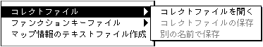
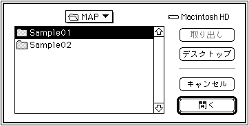
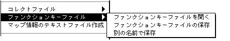

★SOUND Manual
★サウンドシュミレータマニュアル
★SOUND Manual
★サウンドシュミレータマニュアル
▲
戻る｜
進む▼｜
メニュー一覧
サウンドシュミレータマニュアル
■ファイルメニュー
- File メニューを開くと以下のような表示が出ます。
-
- File メニューはサウンドエリアマップを開いたり保存したりするメニューです。
新規
- 新しいマップを作成するときに選択します。
開く
- すでに作成済みのマップを開くときに選択します。
閉じる
- 編集中のマップを閉じるときに選択します。シミュレータは終了しません。
保存
- 編集中のマップを保存する時に選択します。
別の名前で保存
- 編集中のマップを別の名前で保存する時に選択します。
マップのバイナリーファイル作成
- 現在編集中のファイルのBinary形式(実際にターゲットに送信するデータ)を作成する
- ときに選択します。
コレクトファイル

- MIDIファイルのコンバーターリストとコレクトファイルリストのデータファイルの入出力管理をします。
このメニューは以下の３つのサブメニューを持っています。
- コレクトファイルを開く
- コレクトリストファイルを開きます。
Open Collect Listを選択すると、次のダイアログボックスが開きます。

既存のコレクトリストファイルが表示されます。
コレクトリストとは複数のファイル名称をまとめたもので、毎回ファイルを選択する手間を省くためのものです。スタンダードMIDIファイルのコンバート時とシーケンスバンクの作成時に使用します。ここでオープンするファイルには上記２種類のコレクトリストが別々に両方とも入っています。
- コレクトファイルの保存
- 現在アクティブなコレクトリストファイルを保存します。
- 別の名前で保存
- 現在アクティブなコレクトリストファイルを別の名前で保存します。
ファンクションキーファイル

- ファンクションキーの設定ファイルの入出力管理を行います。
このメニューは以下の３つのサブメニューを持っています。
- ファンクションキーファイルを開く
- 保存してあるファンクションキーセットアップの設定内容を呼び出します。
- ファンクションキーファイルの保存
- ファンクションキーセットアップで設定した設定内容をすべて保存します。
- 別の名前で保存
- ファンクションキーセットアップで設定した設定内容を別の名前で保存します。ファンクションキーについてはマップファイルに保存されます。別のマップファイルでキー設定を使用したい場合にこれらのメニューを使用します。
マップ情報のテキストファイル作成
- そのとき選択されているマップがアクティブとなるマップの切り替えを行います。以後サウンドドライバはこのマップをカレントマップ(現在有効なマップ)として動作します。この時マップのファイル情報に自動送信設定がしてあれば自動的にファイルデータの転送まで行います。
サウンドシステムの起動
- あらかじめ転送されていたサウンドドライバ等のデータを元にサウンドシステムを起動します。
システム送信
- ターゲットボードが何らかの形で使用不可能になってしまい、
リセットをかける必要が起こったときに使用します。
システムの送信等を行いSoundSimulatorを再び立ち上げなおす手間を省きます。
なおカスタマイズされたドライバーを送信したい場合はサウンドシミュレーターと同じフォルダーに
"SDDRV.TSK"と言うファイル名でドライバーのファイルをおいてこのメニューを実行してください。
ファイルの送信
- 現在選択されているファイルデータをターゲット上に転送します。
転送したいファイルをクリックすると黒の反転表示となり、選択されたことを示します。
同時に複数ファイルを指定したい場合にはシフトキーを押したまま次のファイルをクリックします。
選択されているファイルをもう一度クリックすれば選択が解除され、白の通常の表示に戻ります。
エフェクトの変更
- カレントマップ上にDSPプログラムが複数個ある時に、DSPプログラムの切り替えを行います。切り替えたいDSPプログラムをクリックすると黒の反転表示となり、選択されたことを示します。
ミキサーの変更
- カレントマップ上に複数存在するバンクファイルから選択されたバンクファイルのミキサー番号の0に変更をかけます。
バンクファイル内に複数ミキサーが存在していた場合、0番以外のミキサーに変更する場合は後述のサウンドシミュレータからの変更が必要となります。
終了
- サウンドシミュレータを終了してウィンドウを閉じます。
▲
戻る｜
進む▼｜
メニュー一覧
★SOUND Manual
★サウンドシュミレータマニュアル
Copyright SEGA ENTERPRISES, LTD., 1997